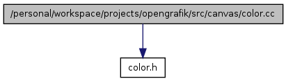

Main Page
Classes
Files
/personal/workspace/projects/opengrafik/src/canvas/color.cc File Reference
#include "
color.h
"
Include dependency graph for color.cc:

Generated on Tue May 6 16:49:36 2008 for opengrafik-canvas by
1.5.5
 1.5.5
1.5.5